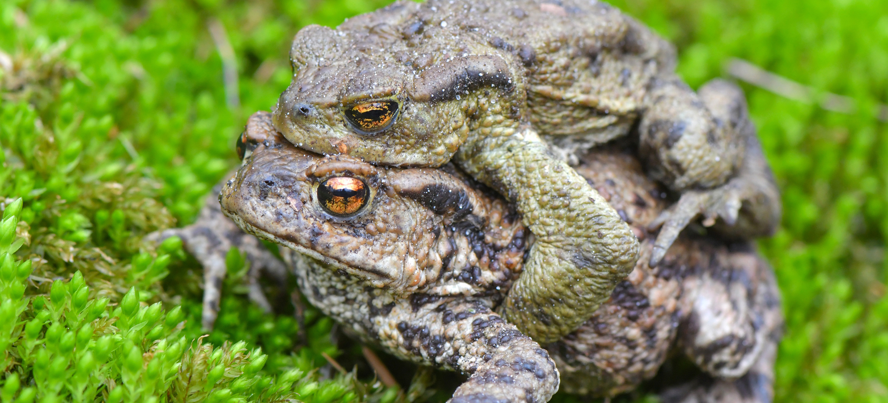

Startseite
Über Frösche
Frösche sind Amphibien, also Wirbeltiere. Frösche, Kröten und Unken bilden die drei Familien der Froschlurche. Sie leben als Jungtiere im Wasser und heißen dann Kaulquappen. Kaulquappen haben Kiemen und sehen noch ganz anders aus als ausgewachsene Frösche, sie erinnern eher an kleine Fische. Später wachsen ihnen Beine und ihr Schwanz bildet sich zurück. Wenn sie dann zu Fröschen herangereift sind, atmen sie über Lungen. Am liebsten leben Frösche in der Nähe von Seen und Flüssen. Ihre Haut ist feucht durch Schleimdrüsen. Die meisten Frösche sind grün oder braun. In den Tropen gibt es auch farbige Frösche: rote, gelbe und blaue. Aus vielen kann man ein Pfeilgift gewinnen. Der größte Frosch ist der Goliathfrosch: Kopf und Rumpf zusammen werden über 30 Zentimeter lang. Das ist etwa so lang wie ein Maßstab in der Schule. Die meisten Frösche passen aber gut in eine Hand. Im Frühling hört man die Frosch-Männchen quaken. Sie wollen damit ein Weibchen anlocken, damit sie sich paaren und Junge machen können. So ein Froschkonzert kann ganz schön laut werden. In unseren Ländern leben vor allem Grasfrösche. Sie leben gern in Gebüschen, im Moor oder im Garten. Sie fressen Insekten, Spinnen, Würmer und ähnliche kleine Tiere. Manchmal überstehen sie den Winter in Löchern in der Erde, sie können aber auch am Grund eines Sees überleben. In Europa wurden viele Tümpel und Teiche zugeschüttet. Auch gibt es immer weniger Insekten wegen der intensiven Landwirtschaft. Deshalb gibt es immer weniger Frösche. In einigen Ländern werden zudem Froschschenkel gegessen, auch in Europa.
Gefährdung von Fröschen
Im Frühjahr sieht man in der Nähe von Feuchtgebieten oft dieses Verkehrsschild. Frösche und Kröten wandern abends oder nachts in ihr Heimatgewässer, um zu laichen. Oft tragen die Weibchen ihre Männchen huckepack auf dem Rücken. Die Lurche bleiben dann leider auf der Fahrbahn sitzen, wenn sich ein Auto nähert.
Viele der einheimischen Amphibien sind in ihrem Bestand ernsthaft gefährdet. Alle europäischen Lurche stehen unter Artenschutz. Dies bedeutet, dass Laich nicht aus Tümpeln entnommen werden darf. Für das allmähliche Aussterben der Amphibien sind noch weitere Ursachen verantwortlich:
Wikipedia:
Amphibien sind unter anderem wegen ihrer durchlässigen Haut und wegen ihrer Eigenschaft als Bewohner von Biotopkomplexen (Gewässer und Landlebensräume, zwischen denen sie im Jahresverlauf pendeln) anfälliger als viele andere Tiergruppen gegenüber schädigenden Umwelteinflüssen und -veränderungen. Von allen auf der Rote Liste gefährdeter Arten der IUCN geführten Tierarten weltweit stellen die Amphibien allein über 23 Prozent – gemessen an der Gesamtartenzahl weit überproportional viel. Diese 360 Millionen Jahre alte Tierklasse wird daher als ein zuverlässiger Bioindikator für den Zustand der Ökosysteme der Erde angesehen.